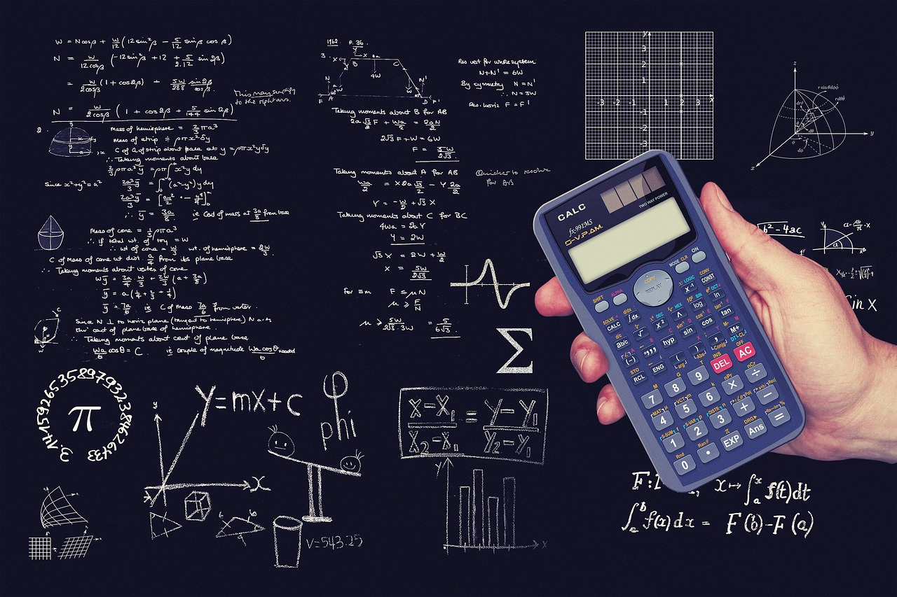
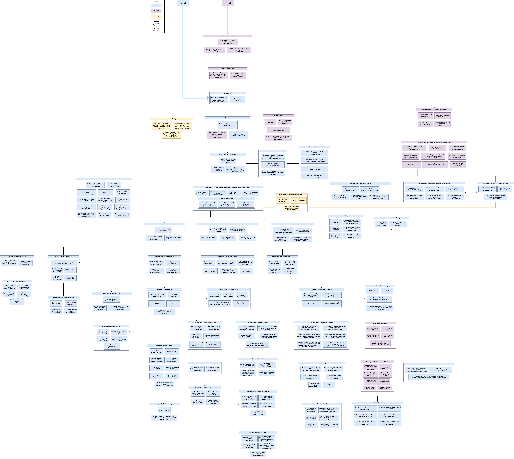

Chapter 1 - Introduction
My Aproach to learning Math

Outline:
1. Introduction
- 1.1. The Different Math Resources
- 1.2. My Path
A List Of The Different Resources
There are different learning approches for different type of people, I will only look at the free online ones
1. OSSU Curriculum Mathematics
A complete, degree-equivalent education in mathematics, crafted entirely from online materials. This structured curriculum is designed to meet the standards of an undergraduate math major, providing a clear learning path that typically spans two years. It's perfect for dedicated learners seeking a thorough and systematic foundation. It's mostly based on curses.
2. Mathematics Roadmap
Dive into mathematics through a carefully selected collection of books and exercises. This roadmap is more than a list; it's guided by a learning philosophy that emphasizes deep understanding, metacognition, and problem-solving. It’s an excellent choice for those who learn best by reading and engaging deeply with fundamental texts.

3. Self Study Map Mathematics
A thoughtfully curated collection designed to make mathematics accessible and engaging. This resource prioritizes pedagogical effectiveness and learner motivation over traditional, often overwhelming, textbooks. It's a shorter, high-quality starting point that helps you build momentum and enjoy the learning process
KI Roadmap
ChatGPT Deep Research.
How to choose:
- For a structured, degree-like path, choose OSSU.
- For a deep, philosophy-guided journey with books, choose the Mathematics Roadmap.
- For a gentler, curated introduction, start with the Self Study Map.
- For a brief introduction and custom plans choose a KI Roadmap.
Note
There are way more resources but these were the most fitting for me.
My Path
The path I took and why.
My Choice
I took a more specific path over the ChatGPT Deep Resarch tool.
My Prompt
Aufgabe
Erstelle eine kompakte, praxisorientierte Roadmap (80/20-Prinzip) aus **kostenlosen** Materialien, mit der ich mir in kleinen täglichen Einheiten (ca. 30 Minuten/Tag) eine sehr gute logische und mathematische Grundlage aufbaue — Fokus: Mindset, Problem-Solving und Rechnen mit komplexeren Formeln.
Ausgangslage
- Deutscher Hintergrund: ich habe die Sächsische/Realschul-Reife.
- Zeitbudget: ~30 Minuten täglich.
- Stil: möglichst wenig zeitintensiv, nicht zu viele Details, aber jedes Themengebiet grundlegend abgedeckt.
Eingehende Referenzen (verwende als Ausgangspunkt / zum Verdichten, aber bitte nur kostenlose Ressourcen ergänzen)
- https://github.com/ossu/math
- https://github.com/TalalAlrawajfeh/mathematics-roadmap
- https://tagvault.org/blog/self-study-map-mathematics/
Anforderungen an das Ergebnis
1. Struktur: klare Module (z. B. Grundlagen, Algebra, Analysis, Lineare Algebra, Kombinatorik/Logik, Wahrscheinlichkeit & Statistik, Problemlösen/Proof-Skills), priorisiert nach Wichtigkeit.
2. Für jedes Modul:
- Kurzbeschreibung (2–3 Sätze), Lernziele (konkret), und **konkrete, kostenlose** Lernressourcen (Artikel, Lehrvideos, interaktive Übungen, Übungsblätter) — idealerweise mit direkten Links.
- Essentielle Übungen (+ Lösungen / Hinweis wo Lösungen zu finden sind).
- Eine 80/20-Checkliste: welche Kernkonzepte reichen für eine sehr gute Grundkompetenz?
3. Zeitplan/Pacing: schlage für jedes Modul eine realistische Dauer in Wochen vor, basierend auf 30 Minuten/Tag, und einen flexiblen Mini-Plan (z. B. 3–5 Sessions/Woche mit konkreten Session-Zielen).
4. Mindset & Problemlösungs-Training:
- Konkrete Übungen und Denkmuster (z. B. Polya-Schritte, strukturierte Heuristiken).
- Tipps, wie ich Denkfehler / Blunders reduziere.
5. Programmier-Verknüpfung:
- Mindestens 4–6 konkrete Übungsprojekte, die ich in **JavaScript** umsetzen kann (jeweils kurze Beschreibung, welche mathematischen Konzepte üben und in ~30–60 Minuten Sessions teilbar sind).
- Je ein Starter-Snippet oder Pseudocode-Outline pro Projekt und Vorschläge für Test-/Übungsfälle.
6. Diagnostik & Messung:
- Einfache Tests/Checkpoints nach jedem Modul mit Erfolgskriterien (z. B. typische Aufgaben, die ich in X Minuten lösen können sollte).
7. Format & Sprache:
- Antwort auf **Deutsch**.
- Nutze klare Abschnitte, Bullet-Points, und nummerierte To-Do-Listen.
- Halte die Roadmap kompakt: Fokus auf das Wesentliche, kein überflüssiger Tiefgang.
8. Zusatz: Die Ressourcen können in englischer oder deutscher Sprache sein.
Bitte liefere die Roadmap direkt — keine Rückfragen. Wenn du eine Annahme über mein Vorwissen treffen musst, gehe davon aus: Realschul-Matheniveau (solide Grundrechenarten, Bruchrechnen, einfache Gleichungen).
Why?
I don't have the time or energy to focus too much on such a side hobby, and I think this option allows me to simply enjoy the process the most.
In the future, I might switch to the Mathematics Roadmap.
1. Grundlagen (Arithmetik & Kopfrechnen)
Kurzbeschreibung: Wiederholung und Vertiefung der Grundrechenarten (Addieren, Subtrahieren, Multiplizieren, Dividieren) sowie Umgang mit Dezimalzahlen, Brüchen und Prozenten. Einschließlich Kopfrechnentraining und Zahlverständnis.
Lernziele:
- Sicheres Kopfrechnen einfacher Aufgaben (Einmaleins, Quadratzahlen) .
- Beherrschung der vier Grundrechenarten (auch schriftlich) .
- Bruchrechnung: Kürzen/Erweitern, Addieren/Subtrahieren mit gleichem Nenner.
- Umwandlung Dezimal ↔ Bruch und Prozentrechnung (Anteil/Basis/Wert).
- Umgang mit negativen Zahlen und einfachen Gleichungen (z.B. $x+5=12$).
Kostenlose Ressourcen:
- Khan Academy (deutsch): Arithmetik & Bruchrechnen (Video-Lektionen, Übungen).
- Serlo.org: Artikel und Übungen zu „Brüche – Grundlagen” und „Dezimalzahlen”.
- Mathebibel.de: Lektionen zu Grundrechenarten und Übungen mit Lösungen.
- Scolix – Kopfrechnen (Scolix.de): Techniken und Übungsblätter für Kopfrechnen .
- Aufgabenfuchs.de: Interaktive Übungen zu Brüchen, Prozentsätzen etc.
Wichtige Übungen:
- Arbeitsblätter „Kopfrechen-Drills” (z.B. 20 Additions-/Subtraktionsaufgaben 2-stellig).
- Bruchrechnen: z.B. Kürzungs- und Erweiterungsaufgaben, Addieren ungleichnamiger Brüche (Serlo, Mathebibel).
- Prozentaufgaben aus dem Alltag (Rabatte, Zinsen): z.B. „20 % von 150 = ?”.
- Kleine Textaufgaben: Mischungsverhältnisse, Zeit/Entfernung (Formelumstellung üben).
80/20-Checkliste Kernkonzepte:
- Grundrechenarten (vier Operationen) sicher, inkl. Schriftlich.
- Einmaleins & Quadratzahlen auswendig (Leistung, Schnelligkeit) .
- Bruchrechnen: Kürzen/Erweitern, Addition/Subtraktion gleicher Nenner.
- Dezimalzahlen: Rechnen und Umwandeln (komma verschieben), Prozentrechnung.
- Negative Zahlen im Kopf (Vorzeichenregeln) und einfache Gleichungen lösen.
- Basis Zahlensystem: Potenzen (10er), Wurzeln (Quadratwurzel) grundlegend verstehen.
Zeitplan: ca. 3 Wochen (~15 Std bei 30 Min/Tag). 3–4 Sessions/Woche, z.B.:
- Woche – Kopfrechnen & Addition/Subtraktion: Strategien (Stützstellen, Rechenumwege) Einmaleins-Auffrischung.
- Woche – Multiplikation/Division, Brüche: Kürzen/Erweitern, Rechnen mit Brüchen.
- Woche – Dezimalzahlen & Prozent: Komma-Rechnen, Prozent–Bruch–Übergänge, einfache Zinsrechnung.